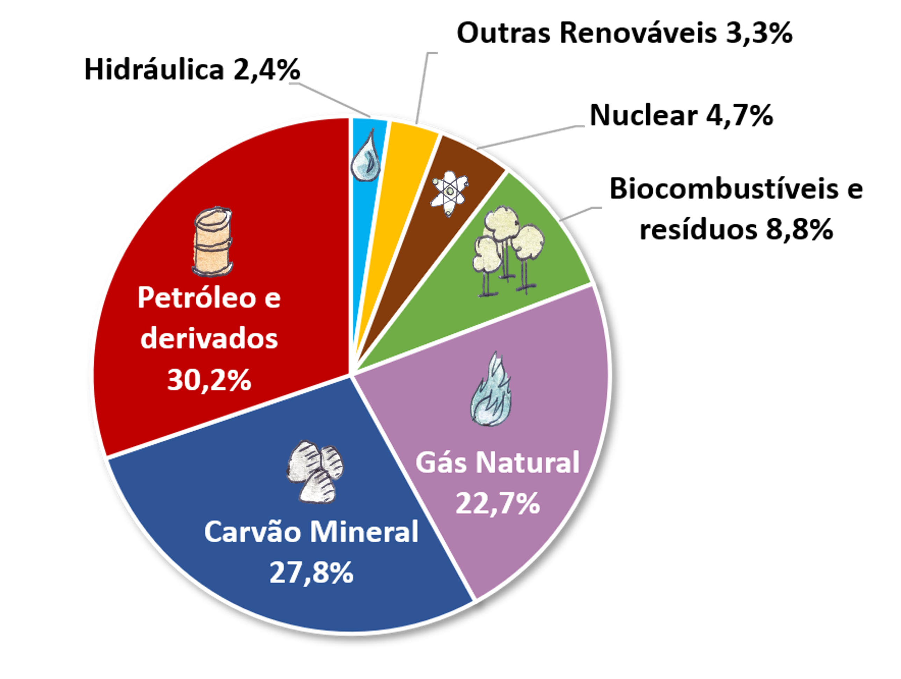
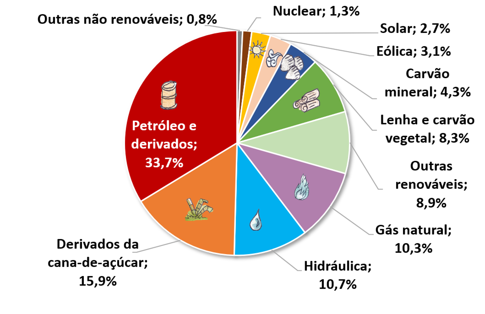
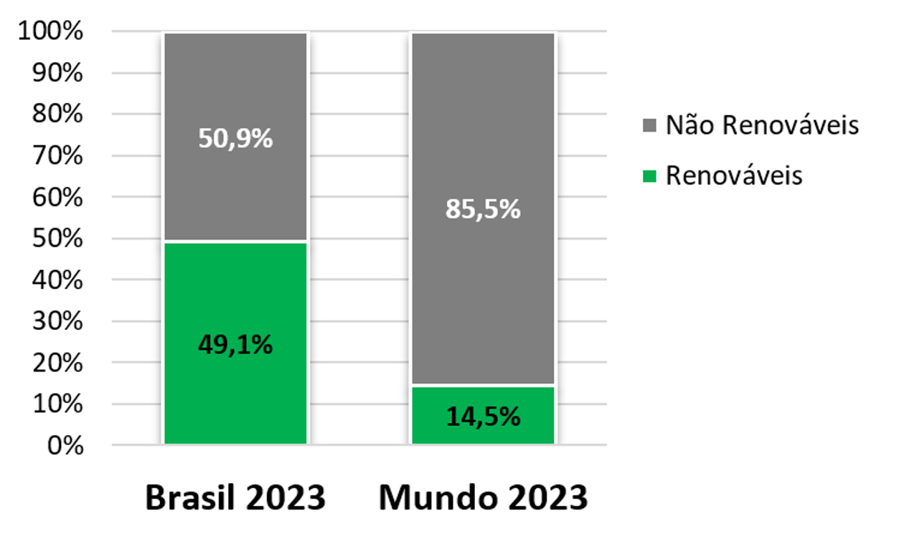
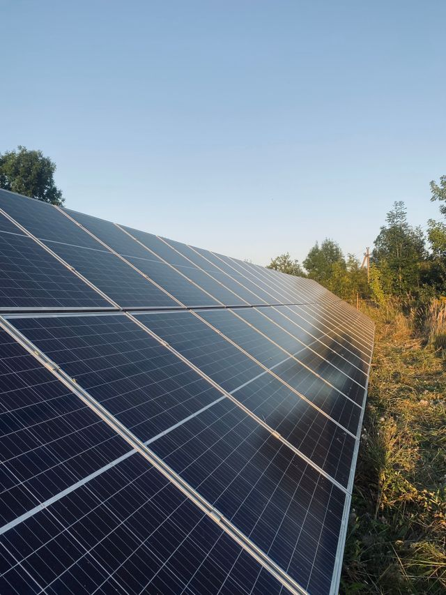
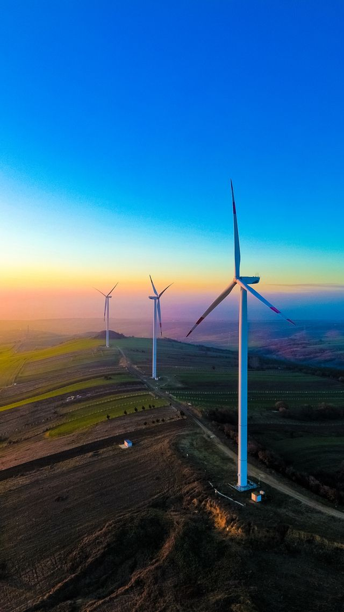
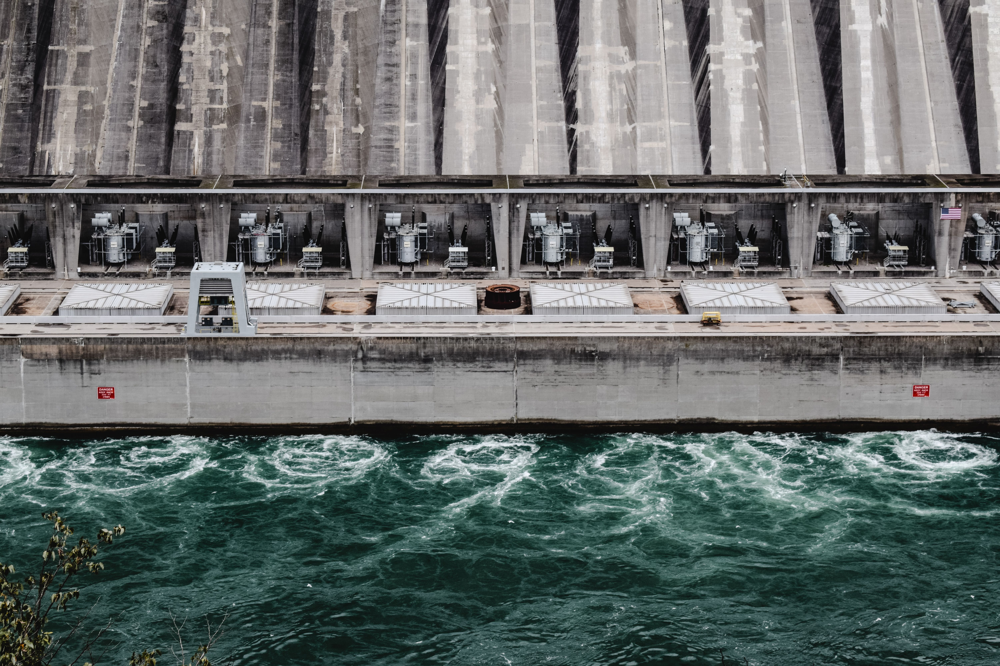
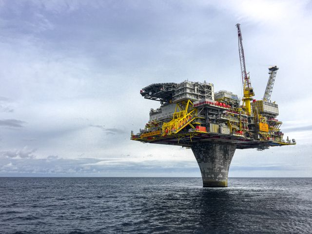
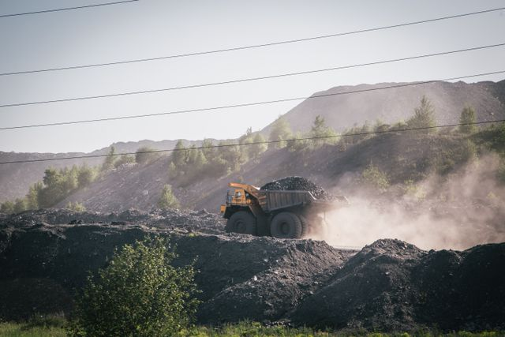
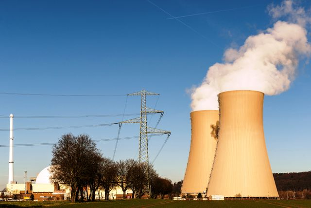

O que é Matriz Energética?
A energia é necessária para realização de diversas atividades cotidianas, na preparação de refeições, nos meios de transporte, e uso de tecnologias básicas como a lâmpada. A energia desses processos vem de um conjunto de fontes chamdas de matriz energética. Representando o conjunto de fontes utilizadas em um país, ou no mundo, para suprir a demanda de energia. A matriz energética é o conjunto de todas as fontes de energia disponíveis em um país ou no mundo para suprir as necessidades de transporte, indústrias, aquecimento e geração de eletricidade.
Renoáveis e não renováveis
A energia renovável vem de recursos que se regeneram sozinhos e não acabam. A energia não renovável usa recursos finitos que levam milhões de anos para se formar.
Tabela Comparativa
| Matriz | Vantagens | Desvantagens |
|---|---|---|
| Renováveis |
|
|
| Não Renováveis |
|
|
O mundo possui uma matriz energética composta, principalmente, por fontes não renováveis, como o carvão, petróleo e gás natural. A matriz energética do Brasil é muito diferente da mundial. Por aqui, usamos mais fontes renováveis que no resto do mundo. Somando lenha e carvão vegetal, hidráulica, derivados de cana, eólica, solar e outras renováveis, nossas renováveis totalizam 49,5%, ou seja, representam quase metade da nossa matriz energética.


Portanto, a energia no Brasil se sobressai pela quantidade de fontes renovávei sem relação aos outros países, isso porque as não renováveis as maiores responsáveis pela emissão de gases de efeito estufa. O país emite menos GEE por habitante que a maioria dos outros países.

Energias Renováveis
São fontes que se regeneram naturalmente em pouco tempo ou são inesgotáveis.

Solar
Características: Capta a luz do Sol por painéis fotovoltaicos para gerar energia elétrica.
Exemplo: Usinas fotovoltaicas e placas residenciais.

Eólica
Características: Usa a força do vento para girar turbinas (aerogeradores).
Exemplo: Parques eólicos onshore e offshore.

Hidrelétrica
Características: Usa a força e a queda da água dos rios para girar turbinas elétricas.
Exemplo: Usina de Itaipu.
Energias Não Renováveis
São recursos finitos que levam milhões de anos para se formar na natureza.

Petróleo
Características: Combustível fóssil líquido extraído do subsolo.
Exemplo: Gasolina, Diesel, Plásticos.

Carvão Mineral
Características: Rocha fóssil queimada em termelétricas. Altamente poluente.
Exemplo: Termelétricas a carvão e siderurgia.

Nuclear / Urânio
Características: Obtida pela fissão nuclear de átomos de Urânio em reatores.
Exemplo: Usina de Angra dos Reis.